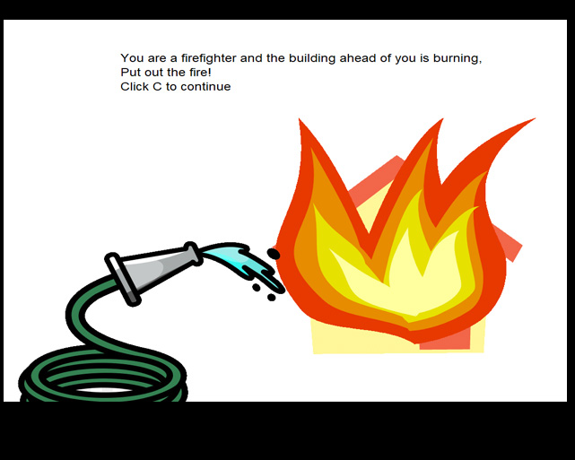
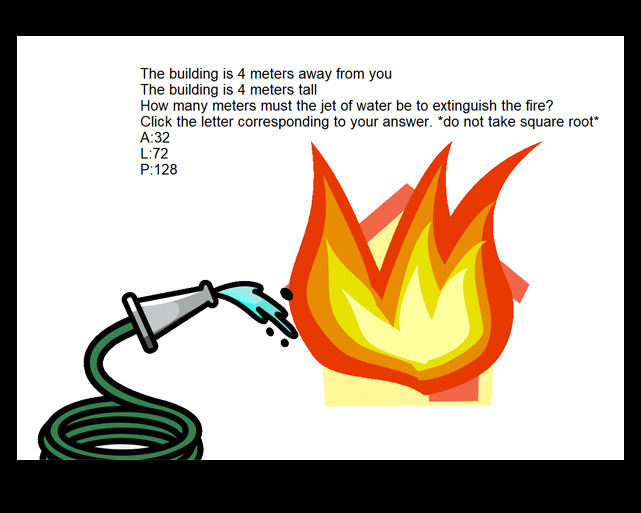
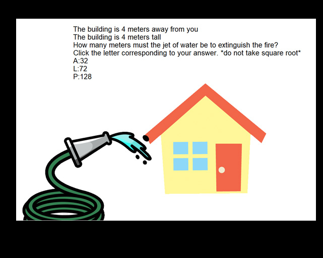
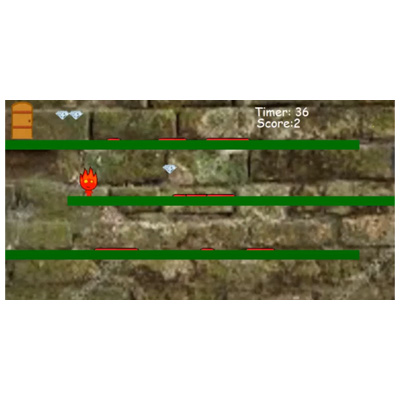

This project is designed so the user gets to choose the majority of the colors used in their imaginary world. The users gets to pick the colors of the house (which includes roof, door, and windows) and the garden (which includes 2 flowers, a ladybug, and a spider. The program starts off with drawing a background. The background is composed of green grass, a blue sky, a yellow sun, and white clouds. The program then goes on to draw the house with the colors the user inputted. After drawing the house the program then draws the garden. It starts the garden off by drawing the 2 flowers with the colors the user choose, then the ladybug with the color the user choose, and finally ends the garden with drawing the spider with the colors the user choose. The final part of the program is having the object the user chooses move accros the screen. If the user chooses a bee, then the program imports a photo of a bee and has it fly from one flower to the next one. If the user chooses plane, then a photo of an airplane is imported and plane flies across the sky from one end to the other. Finally, if the user chooses a hot air balloon, then a a photo of a hot balloon is imported and flies from the ground to the sky and sits right underneath the sun.
Fireman



This project is actually a math game in which you are a fireman and you have to put out the fire that is ontop of the house by finding the hypotnuese. The program has a start function that when you click s the game starts. The game first makes all the calcuations which includes randomly getting a number between 4 and 8 (those numbers included) for how far away the house is and how tall the house is. The program then goes on to write your task on the screen which is to put out the fire that is burning down the house. The game will then pause for you to read your task and will only continue once you have clicked c. The game then erases the previous message and write a new one which tells you how far away the house is and how tall the house is. It also lists 3 options for what the answer could be and tells you to click on the key with the correct answer. It tells you not to take the square root of the hypotnuese because some of these numbers do not give you whole numbers and it would make it difficult for the user to solve the problem without a calculator. If you select the right answer water comes out of the hose and puts out the fire. If you choose the wrong answer then the fire stays and the game tells you that you choose the wrong number. When the game is finished you can click s again and the game restarts and this time the values will change and you can start the game from the beginning.
Fireguy

This project is a gmae that is similar to fireboy and watergirl. This is a one player game where the objective of the game is to collect as many gems as you can and get to the exit without touching a red platform. There is collision detection going on at all times trying to detect whether you touch a diamond, red platform, or the door which is the exit. Depending on the number of diamonds you collect before getting to the exit is the grade you get. If you collect all of them you get an A+, if you miss one you get an A- all the way to 0 diamonds which is an F.
FTour of New York.
>
This project is a tour of New York. We used scratch to design a tour of New York where you get to visit the Met, Times Square, and the Statue of liberty. To make this project we had to find the backgrounds we wanted and turn them into backdrops. When we found the characters we wanted we turned them into sprites.